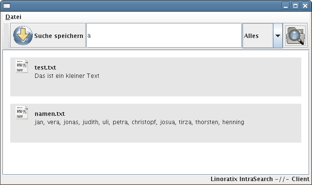

Linoratix Intranet Search is a Desktopsearch alike tool for indexing all the documents in your network.
First download the zip-archiv.
Create a new MySQL Database and an user for this database.
Use the table.sql file inside the zip-archiv to create all needed tables.
mysql -uUSER -pPASSWORD database < /path/to/archiv/install/tables.sql
Create a directory where you store the server's configuration file "server.xml" (for example /etc/lintrasearch)
Copy the file install/server.xml into that directory and edit this file.
Now create an init script to start the server during boot. You can use startServer.sh to see how to start the server.
Create a directory lintrasearch inside your Homedirectory and copy the file install/client.xml to that directory. Edit this file to suit your needs.
Copy the icons directory to the lintrasearch directory in your Homedirectory.
See startClient.sh script to see how to start the client.

Writing plugins is as easy as eating your lunch ;-)
An example Plugin:
1 /* 2 * TextFile.java 3 * 4 * Created on December 21, 2005, 8:36 AM 5 * 6 * Index Textfiles 7 */ 8 9 package contentserver.Plugins.MimeTypes; 10 11 // Import some lintrasearch classes 12 import contentserver.MimeTypePlugin; 13 import contentserver.MimeType; 14 import org.linoratix.base64.*; 15 16 import java.util.*; 17 18 public class TextFile extends MimeTypePlugin { 19 20 // Method to register a mimetype to the server 21 public ArrayList getMimeType() { 22 ArrayList l = new ArrayList(); 23 l.add(new MimeType("text/plain", "txt")); 24 25 return l; 26 } 27 28 // method to get the content of the document in text format 29 public String getContent(String _content) { 30 StringBuilder sb = new StringBuilder(); 31 byte[] inhalt = Base64.decode(_content); 32 for(int i = 0; i < inhalt.length; i++) { 33 sb.append((char)inhalt[i]); 34 } 35 36 return sb.toString(); 37 } 38 } 39